Design
Build the airframe — and know it's stable before you leave the tab.
The structured component tree mirrors how a real rocket goes together: stages hold nose cones, body tubes and transitions; fin sets, motor mounts, bulkheads and couplers nest where they physically live. A live 3D viewer (with a 2D line / wireframe toggle) redraws the vehicle as you type, and a Barrowman stability panel recomputes with every keystroke.
- Component palette — nose cones, body tubes, transitions, trapezoidal fin sets, inner components
- Live CP / CG / static-margin readout in calibers with STABLE / MARGINAL / UNSTABLE / OVERSTABLE verdicts
- Barrowman implementation ported from OpenRocket — CP agrees exactly on imported designs
- Per-component materials with mass roll-up and total mass / weight properties
- Live 3D preview + 2D wireframe mode, camera reset, component highlighting
- OpenRocket
.orkimport with exact positioning and round-trip.k2projsaves
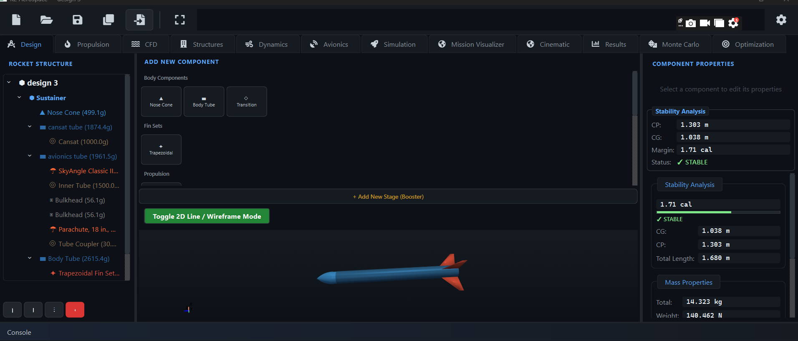
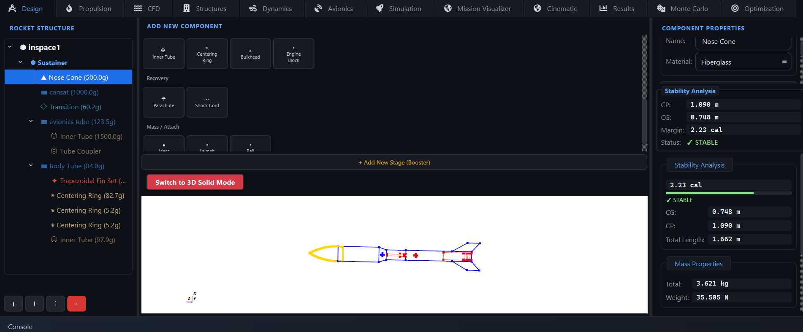
Propulsion
The entire ThrustCurve.org certified catalog, filtered to what actually fits your rocket.
1,129 real motors with measured thrust curves — not idealized rectangles. Filter by impulse class and diameter, tick Fit current body and the list collapses to motors that physically fit the mount you designed. Selecting a motor pulls its real curve and immediately updates vehicle mass, CG and stability.
- 1,129-motor catalog — the full ThrustCurve.org certified database, refreshable
- Real measured thrust-vs-time curves, plotted as you browse
- Class / diameter / fit-current-body / hide-out-of-production filters
- Motor properties: total impulse, average and peak thrust, burn time, propellant mass
- Computed performance for your vehicle: thrust-to-weight, burnout estimates
- Custom motor creator with internal-ballistics grain regression for experimental solids
- Motor casing mass tracked separately — stability stays honest after burnout
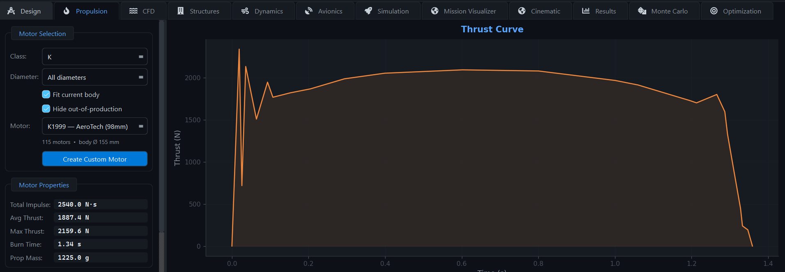
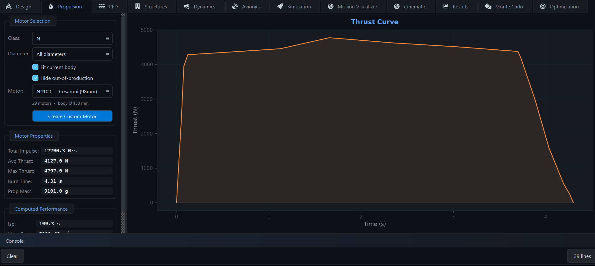
CFD
A real SU2 pipeline — design to converged flow field without touching a config file.
One click takes the current design (or an external CAD file), exports a watertight surface, meshes it with curvature-aware gmsh refinement and hands it to SU2. Pick Euler, Laminar, Spalart–Allmaras or k-ω SST; flow conditions come from the ISA atmosphere at your chosen altitude. The result is a fully interactive 3D field — not a static report.
- Solvers: Euler, Laminar, Spalart–Allmaras, k-ω SST — multithreaded OpenMP SU2 build
- 3D field view: mid-plane slices (density, temperature, pressure gradient), streamlines as tubes / lines / ribbons, interactive slicing, contour lines, mesh edges, point probe
- Drag decomposition by surface integration: pressure / friction / base / wave shares of total Cd
- Lift, moment, and CP location from integrated surface forces
- Polars tab: AoA and Mach sweeps reusing a single mesh, with concurrent sweep points
- Hybrid Euler + flat-plate-friction drag mode for fast, trustworthy polars
- Convergence residuals, mesh-quality metrics, boundary-layer Y+ and wall-shear views, full solver log, CSV export
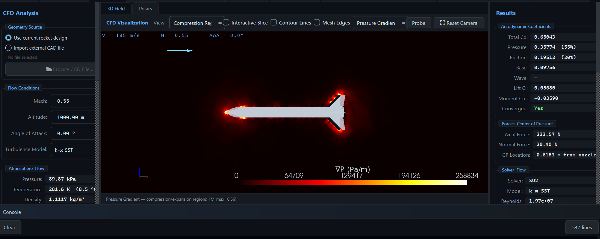
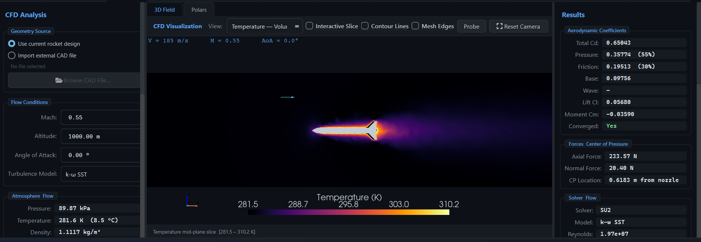
Structures
An ANSYS-style structures workstation with a bundled CalculiX FEM solver.
Import the worst-case loads straight from your last flight — the workstation searches the whole trajectory for the critical instant — and analyze the airframe across eleven dedicated tabs. CFD surface pressures can be mapped directly onto the FEM mesh as distributed loads, and everything rolls up into a single structural safety score.
- Eleven analysis tabs: 3D stress, stress profile, modal, thermal, deformation, fin analysis, recovery loads, buckling, load path, failure map, mass efficiency
- CalculiX FEM solves with selectable mesh refinement; thin-shell results cross-checked against Roark closed forms
- Flight-load import with automatic worst-case search (max-Q, max thrust, recovery shock)
- Four-mode buckling analysis and recovery-deployment load cases
- 3D von Mises contour viewer with peak-stress marker and component isolation
- Structural safety score out of 100 plus independent physics-consistency checks
- CFD → FEM pressure mapping and one-click PDF structural report
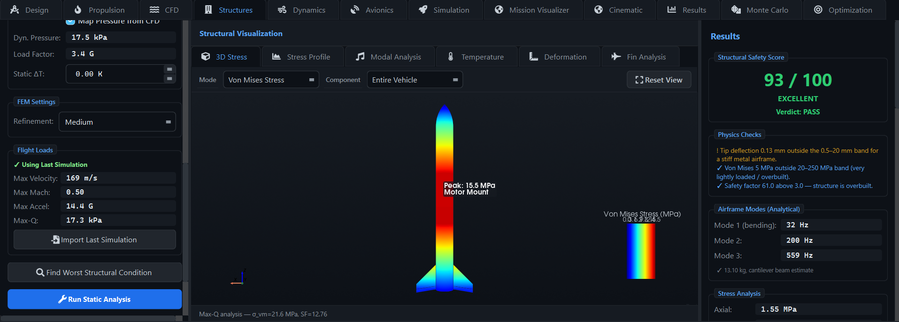
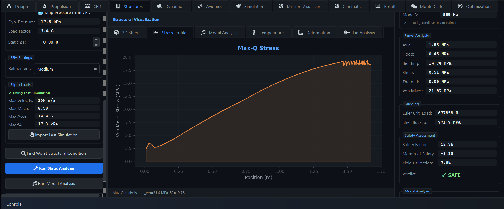
Dynamics
Will the fins flutter before apogee? Answer it before the flight, not after.
Aeroelasticity and vibration in one place: the NACA TN-4197 flutter method backed by a p-k solver, a frequency-response view that names each resonance peak and ranks its risk, and a flight envelope that overlays your actual trajectory against the flutter and divergence boundaries.
- Five views: Flutter Boundary, Frequency Response, Aeroelastic, Mode Shapes, Flight Envelope
- Fin flutter via NACA TN-4197 + p-k method; divergence speed prediction
- Resonance identification table with per-mode frequency, magnitude and risk rating
- Vibration analysis with configurable damping ratio and input PSD
- Max-Q flight loads pulled from the last simulation — not hand-typed guesses
- Flight safety score with margin breakdown (flutter, divergence, emergence velocity)
- Consistency checks plus JSON / CSV / PDF report export
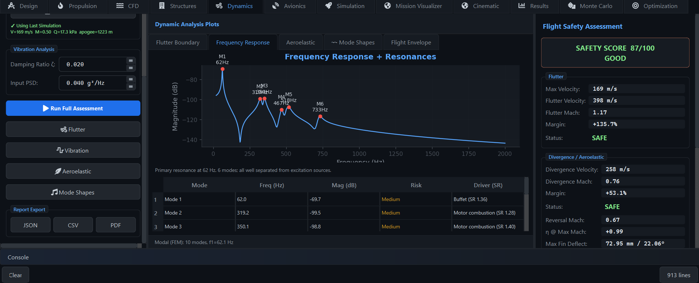
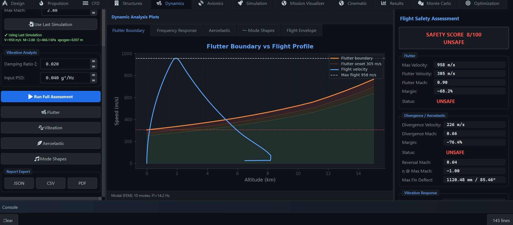
Avionics
A simulated flight computer flying on realistic, noisy sensor data.
The avionics workspace runs a full flight-computer state machine against the live simulation — ARMED through BOOST, COAST, DROGUE, MAIN and LANDED — fed by modeled sensors instead of perfect truth. Tune the noise to match your real hardware and watch whether your deployment logic still fires at the right time.
- Flight-computer state machine: ARMED → BOOST → COAST → DROGUE → MAIN → LANDED
- Live gauge cluster: altitude, velocity, acceleration, Mach, thrust
- Three-axis IMU / gyroscope readouts driven by the 6DOF attitude state
- Sensor presets (e.g. Hobby MPU6050 / BMP280) with per-sensor noise: accelerometer, barometer, gyro, GPS
- Kalman-filter state estimation fusing the noisy channels
- Event detection — liftoff, burnout, apogee, deployment — from estimated state, exactly like real avionics
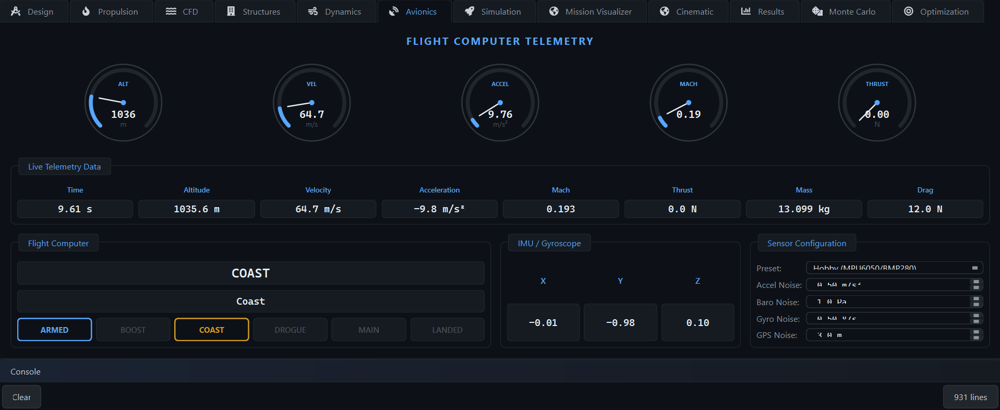
Simulation
Mission control for the 6DOF engine.
Configure the flight, push Run, and watch the full rigid-body simulation unfold in real time (or faster). The physics follows OpenRocket's methodology: quaternion attitude, Reynolds-dependent skin friction, Mach-dependent base and pressure drag, altitude-dependent gravity, adaptive time stepping — integrated with RK4 or adaptive RK45 Dormand–Prince.
- Full 6DOF state: position, velocity, attitude, body rates and mass, propagated each tick
- Integrator choice — RK4 or RK45 Dormand–Prince — with configurable dt and sim speed
- Environment panel: ISA atmosphere, launch-site conditions, launch-rod length and angle
- Wind with gusts and pink-noise turbulence; multi-level wind profiles
- Recovery setup: drogue / main CdA, deployment altitudes, dual-deploy sequencing
- Live flight data and a phase timeline that lights up each mission event as it happens
- Run in Normal or Cinematic view — the engine feeds every other workspace's flight data
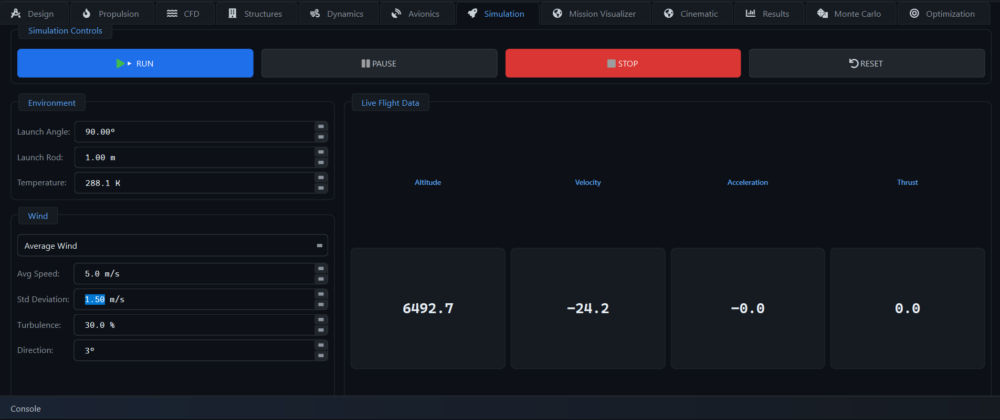
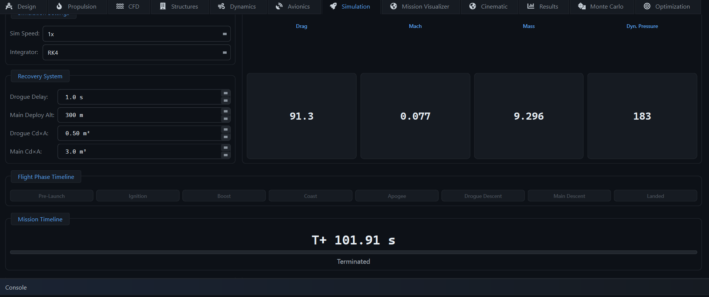
Mission Visualizer
The live 3D view of the flight — engineering edition.
A real-time 3D scene tracks the vehicle from rod to touchdown with its actual attitude, trail and deployed chutes, while a telemetry sidebar and a five-channel sparkline strip keep the numbers in view. After landing, the flight stays scrubbable: click any event and the replay jumps there.
- Live 3D trajectory with vehicle attitude, parachute rendering and ground reference
- Chase camera and selectable trail trait (Mach, velocity…) with quality presets
- Telemetry panel: mission time, altitude, velocity, acceleration, Mach, mass, thrust, drag, dynamic pressure, stability, phase and recovery status
- Sparkline strip: altitude, velocity, Mach, acceleration and dynamic pressure vs time
- Flight Events and Timeline tabs with replay — play / pause / restart, click an event to jump
- Overlays: altitude planes, flight envelope, force vectors, event flags, HUD, target and recovery radius rings
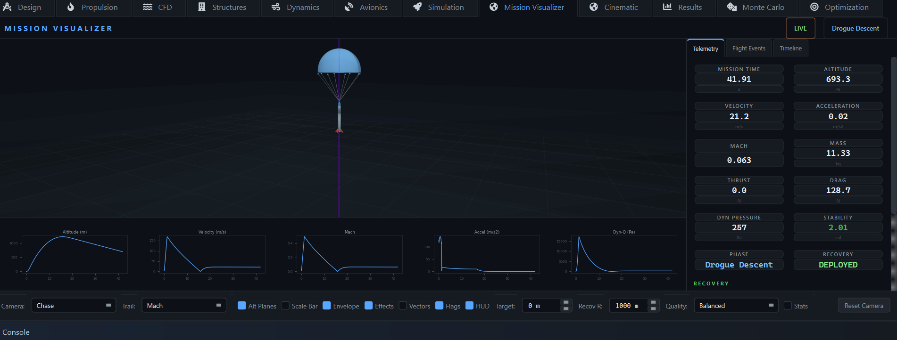
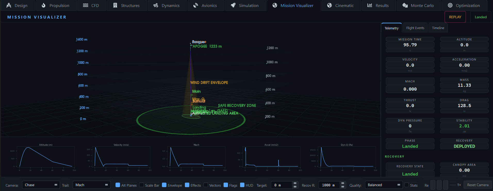
Cinematic
Your flight, presented like a launch webcast.
A three.js render of the same telemetry with a SpaceX-style HUD: big thin SPEED / ALTITUDE / MACH / THRUST readouts, a T+ mission clock, and an event timeline ribbon that fills in as the flight progresses. The follow-cam never loses the rocket; the exhaust plume gets its mach diamonds.
- Webcast HUD: speed, altitude, Mach, thrust, T+ clock, phase, mini graph strip
- Timeline ribbon with event nodes — LIFTOFF, MAX-Q, BURNOUT, APOGEE, DROGUE, MAIN, TOUCHDOWN
- Rigid follow / chase / pad cameras with telescopic zoom (0.25–6×, up to 60× post-flight)
- Mach-diamond exhaust plume, pad smoke cloud, 3D event markers along the trajectory
- Full replay system: scrub bar, 0.5–4× playback speeds, LIVE return
- Post-flight envelope overlay: outcome-colored recovery ring, predicted landing ellipse, wind-drift cone, target-apogee plane
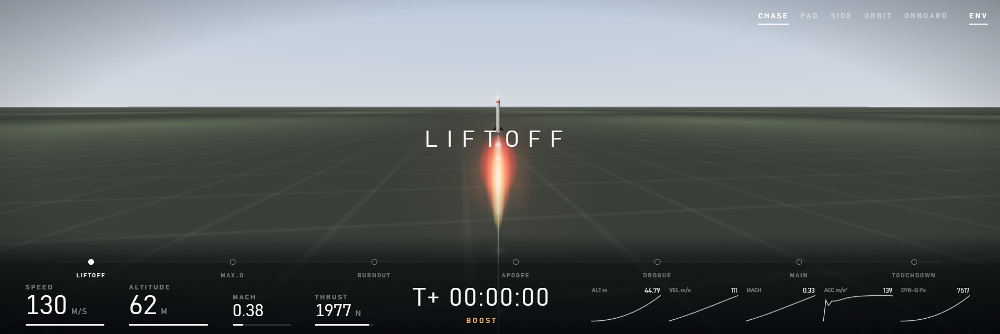
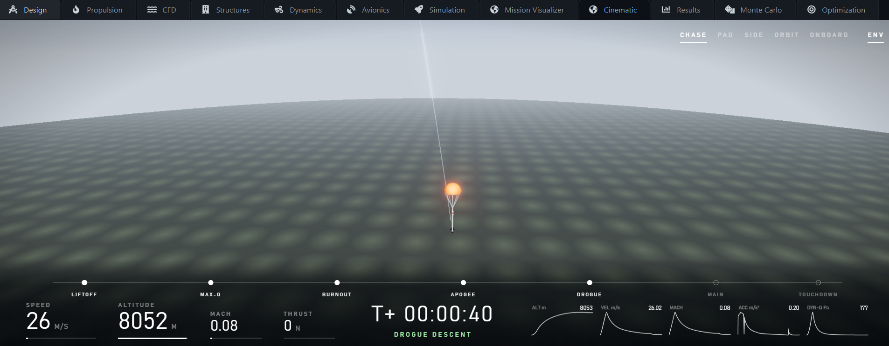
Results
Every recorded sample of the flight, one scrub away.
The flight recorder keeps thousands of data points per flight. A summary strip gives the headlines — apogee, max velocity, max Mach, max acceleration, flight time — and a time scrubber lets you drag to any instant and read off the complete vehicle state at that moment.
- Eight plot tabs: Altitude, Velocity, Acceleration, Forces, Mass, Mach, Stability, Dynamic Pressure
- Headline summary: apogee, max velocity / Mach / acceleration, flight time, sample count
- Time scrubber with instant readout — time, altitude, velocity, accel, Mach, thrust, drag, mass, phase, dynamic pressure, stability, Cd
- Full-history CSV export for external tooling and post-flight comparison
- Auto-refreshes and comes to front when a flight completes
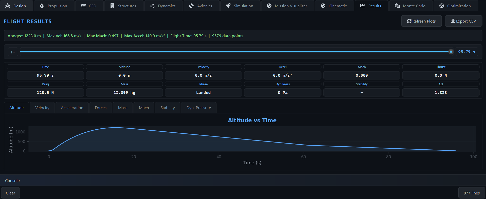
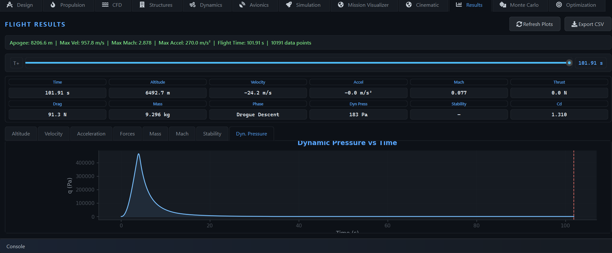
Monte Carlo
One flight is an anecdote. A thousand dispersed flights are a prediction.
Define the uncertainty you actually have — wind, mass, drag, motor performance, launch angle — and the batch engine flies the whole population in parallel. Out come distributions, a landing-dispersion ellipse you can hand to your range safety officer, and a tornado chart showing which uncertainty actually drives the outcome.
- Uncertainty groups: wind, vehicle (mass, CG, Cd), motor (thrust, impulse), launch (angle, direction)
- Parallel batch runs with configurable simulation count
- Five result views: apogee distribution, landing dispersion, landing distance, performance box plots, tornado sensitivity
- Statistics panels: apogee / performance / landing stats with percentiles
- Failure criteria with mission assessment, failure breakdown and reliability analysis
- Best-case / worst-case scenario extraction — load either one back as a flight
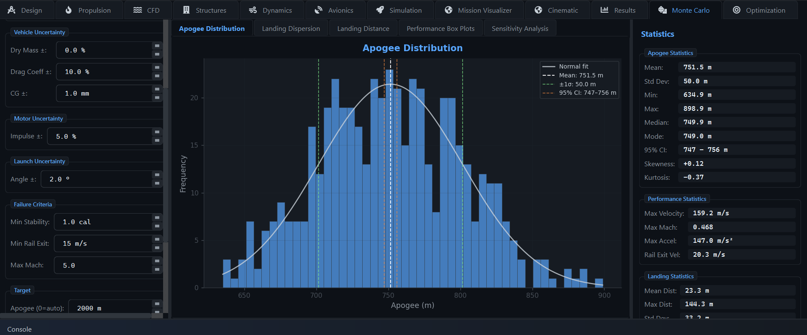
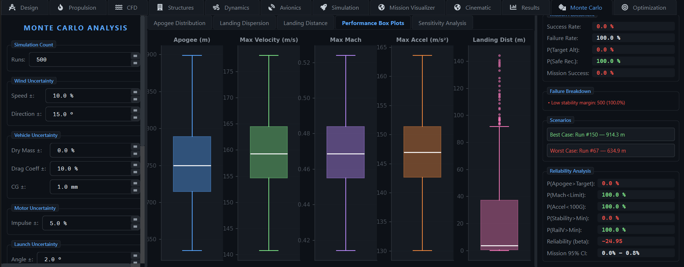
Optimization
Stop guessing fin sizes. State the objective and let the optimizer search.
Select which design variables are free, declare objectives and constraints, and pick an algorithm — Differential Evolution, Genetic Algorithm or Particle Swarm. Robust mode optimizes under Monte Carlo uncertainty (mean, worst-case, reliability or p5), and a surrogate model with active learning slashes the number of full simulations needed.
- Algorithms: Differential Evolution, Genetic Algorithm, Particle Swarm — with parallel evaluation
- Robust optimization modes over Monte Carlo: mean, std, worst-case, reliability, p5
- Random Forest surrogate acceleration with active learning
- Free choice of design variables, objectives and constraints
- Result views: single- and multi-objective convergence, Pareto front, design space explorer with axis / color mapping
- DOE studies: Latin Hypercube, Full Factorial, Taguchi — plus response surfaces
- Sensitivity methods: Sobol indices, PRCC, Morris screening
- Compare designs side by side; push the best optimized design back into the project
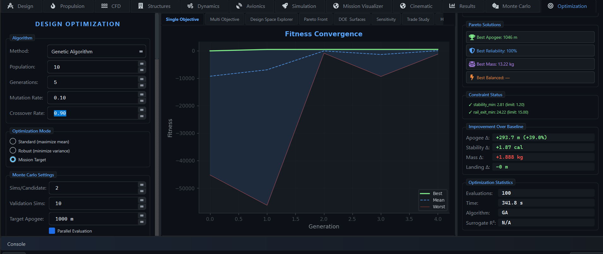
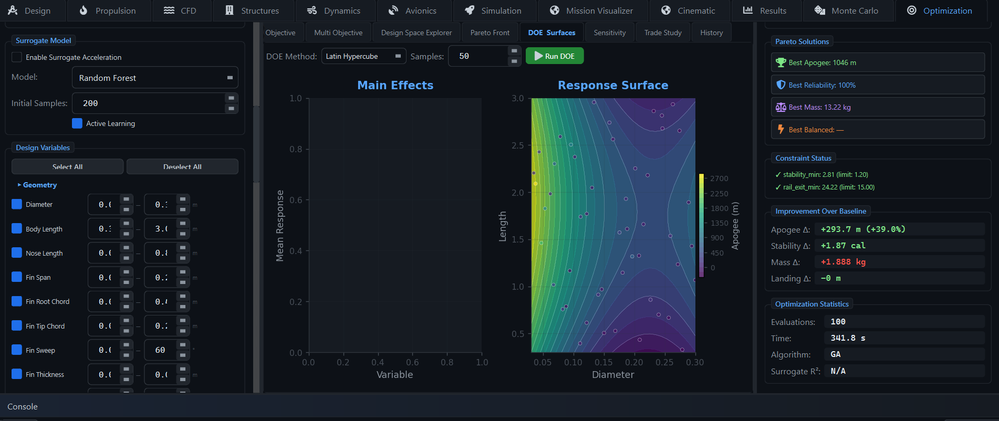